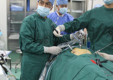
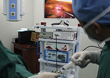
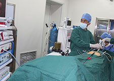
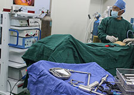

初次见到沈立华院长，谁都会留下深刻的印象，瘦小的身材，却蕴藏着无穷的能量。沈院长平时走在路上时话不多，在人群中也并不显得多注目，但是要是看着他紧锁的眉头，你就知道他的脑子时刻都在高速运转，思考着问题。笔者意识到，这样的人物一定有很多精彩的故事，果不其然，经过笔者的深入采访，惊喜地了解到这位知名微创腔镜专家曾经成功为奇葩节育环异位致绞窄性肠梗阻患者实施手术，以大气魄、大胆识勇敢无畏地征服微创领域的高峰，书写着微创手术大手笔的传奇行医故事。
-
擅长疾病：肝胆、脾胰、胃肠、甲状腺、乳腺等外科疾病的诊断治疗以及腹腔镜下行胆囊、阑尾切除术、小儿疝气及各种类型的鞘膜积液手术、精索静脉曲张高位结扎术、肝肾囊肿开窗引流术、肠粘连松解术等外科微创手术。
-
简介
毕业于南京医科大学临床医学专业，从事外科临床工作30余年，先后赴苏北人民医院、南京军区总医院进修，并师从上海长海医院柯重伟教授学习腹腔镜技术，在省级、国家级医学专刊上发表学术论文24篇，其中《急性胆囊炎腹腔镜切除的手术方法与技巧》获政府自然科学奖项，从业以来致力于普外科和腹腔镜外科的临床及科研工作一项......[详细]
安全性高
创伤小
痛苦少
康复快
- 腹腔镜微创技术被国际医学界称为“绿色手术”，它仅需在患者腹部开3个约5毫米的切口，将腹腔镜插入腹腔内，运用数字摄像技术使镜头拍摄到的图像通过光导纤维传导至后台信号处理系统，并且实时显示在专用监视器上，通过各个角度对病灶存在的部位、大小、外观和表面组织进行细致观察，运用特殊的腹腔镜器械进行手术，具有安全性高、创伤小、痛苦少、康复快、几乎不留疤痕等特点，同时还大大缩短了患者的住院时间，并减少了整体医疗费用。
医院手术区严格按照国家建设部、卫生部《医院层流手术室建设标准》建造，是目前国内最安全、最先进的手术室之一。它通过采用每小时换气600次和空气净化的措施，将空气的尘埃粒子过滤、消毒，使细菌无载体传播，达到除尘灭菌效果，空气洁净度达到99.9%，从而控制外源性感染。同时，手术室外置保温隔音板材，内侧防锈彩铜板经6次真空离子防菌喷涂，能有效保持室内恒温、恒湿、恒压。在这样的空气环境下，能保持最好、最安全的手术效果。
- 微创腔镜中心主要开展手术项目
-
肝脓肿引流
阑尾切除
保胆取石
胃肠穿孔修补
小儿鞘膜积液
多囊卵巢综合症打孔
异位妊娠
精索静脉曲张高位结扎
胆囊切除
肝囊肿开窗引流
肾囊肿开窗引流
肠粘连松解
不孕症
卵巢畸胎瘤剥
子宫肌瘤剔除
卵巢囊肿剥除
子宫次全切除
子宫内膜异位症
盆腔粘连松解
小儿疝气高位结扎
- 
- 
- 
- 